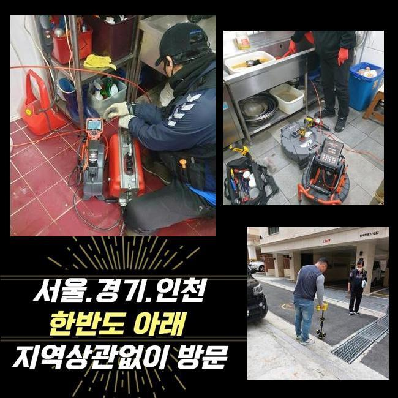
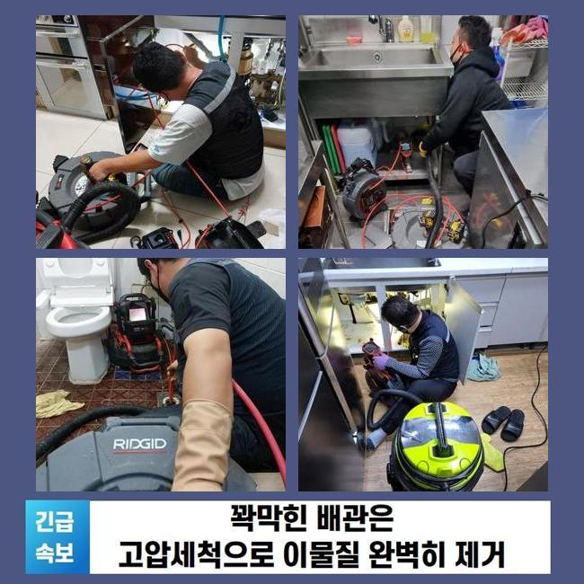
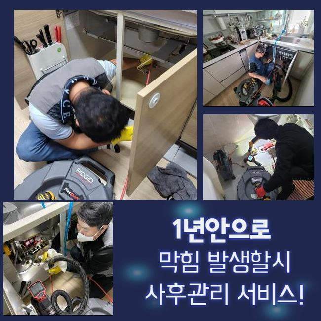
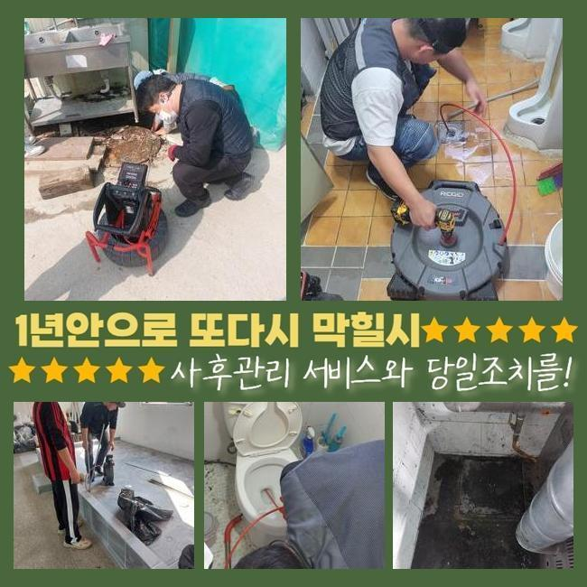
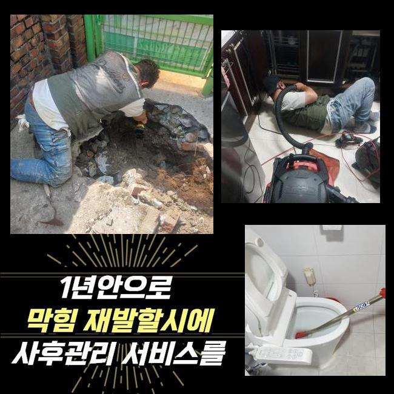
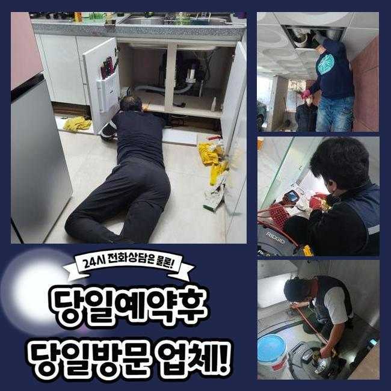
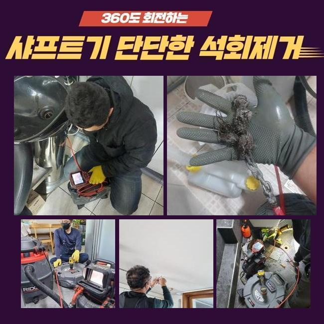

🏠 일산 대화동화장실뚫음 가좌동 배수로뚫기 설비공사
용인시 처인구 배관막힘 전문 시공 후기

📋 작업 개요
- 위치: 용인시 처인구, 수원시 영통구, 화성시 동탄
- 서비스 유형: 배관막힘, 고압세척, 내시경점검
- 작업 일시:
- 업체명: 하수구수사대 (010-5615-2118)
🔍 문제 상황
일산 대화동화장실뚫음 가좌동 배수로뚫기 설비공사
얼마전 방문드렸던 장소라 함은 음식점의 주방이였죠
의뢰자는 트렌치가 이상하다며 하수관으로 안빠지는 증상으로 도움을 요청하셨죠
현장으로 방문하니 하단에 하수가 정체된 상태였고 냄새도 전체적으로 발생되고 있던 차였어요
당연하지만 음식전문점이기에 위생부분이 중요할 수 밖에 없는데요
때문에 빨리 증세를 타파하고자 구석구석 점검했습니다
하단부의 하수관을 살피니 고착물과 이물이 축적된 모습이였고 약간씩 딱딱하게 굳어버렸죠
덧붙여 주위에까지 역류하게되는바람에 위생상태에도 피해들을 전가시키는 상태였습니다
해당 상황에서 조속하게 청소를 이행되지 못한다면 부차적인 증세가 생길 수 있어서 조속하게 작업들을 시작했는데요
이유들을 살펴보고 알맞은 방법들을 구상했죠
1순위로는 트렌치라인을 깨끗히 제거시키기 위하여 소형 고압기를 준비해주었습니다

🔎 원인 분석
💡 전문가 진단: 정밀 진단 장비를 사용하여 슬러지의 고착 여부를 판명하고 타격/세척 작업을 실시했습니다.
고압세척의 경우 강력한 물의 압력으로 출수부분의 슬러지를 깨끗히 제거시킬 수 있습니다
더군다나 좁은 라인에도 삽입되는 케이블들을 운용해서 이물축적된 스팟을 정말히 작업했죠
더군다나 출수부분의 내측을 확인할 생각으로 내시경기기를 써서 작업 구간을 체크했습니다
내시경장비의 경우 어두운 부분의 모습을 보여주어 균열이라던가 또 다른 문제들도 특정해낼 수 있는데요
이와같이 실시해주면 연유들을 정확하게 체크하며 우선적으로 시정해야되는 부위를 집중해서 작업하는 것이 가능하죠
이런 방식으로 진행한다면 요구되는 비용들을 아끼는게 가능해요
세척을 시작하기 전에 의뢰자께 적합한 계획과 관련하여 안내했습니다
이같은 과정을 거치면 고객분도 작업수순을 알 수 있게 되고 안도하실 수 있죠
또한 트랜치 청소의 중요함과 내시경의 전반적인 쓰임들 자주 생기는 증상들과 해결계획에 대해서도 일러드렸는데요
관로의 검수가 끝났을 땐 추후 유지하게되는 꿀팁도 안내해 트렌치가 오래도록 유지되도록 했어요
의뢰자는 저희들의 안내를 들으시더니 바로 세척을 요청하시어 곧장 진행했어요

🔧 작업 과정
벽에 달라붙은 컨디션을 본 뒤 조속히 세척을 진행했어요
우선 크란즐기기를 써서 바닥 관로를 꼼꼼히 정리했죠
고압수가 트렌치라인을 구석구석 세척시켜 단단하게 굳어진 여러가지의 잔해물을 신속히 청소했어요
작업을 마치고서는 재차 내시경장치로 구간들을 촬영해 청결을 되찾은 상황을 목격했습니다
내시경카메라를 이용한 결과 출수부분의 내부모습을 확인하는것에 많은도움으로 작용했죠
송출되는 화면을 보고 하수라인의 어느지점에 문제들이 있는것인지 얼마만큼의 잔여물질들이 쌓이게된것인지 관찰할 수 있었어요
꼼꼼한 조사로 시발점을 특정하고 증상이 심한 지점을 타겟하여 이행했습니다
각 관로들이 청결하게되며 역류하는 현상도 말끔히 해결된 것도 보았죠
하수도가 회복되며 오수가 빠져나갔습니다
트랜치 내부 이물제거가 일단락되면 바닥부분도 깔끔히 정리했죠
식당의 경우 음식물들을 취급하기에 위생사안이 대두됩니다
그리하여 끝마치기전 청결함을 유지하게 정리한것이죠
청소가 종료되고 고객님또한 체크하게 되었어요
트렌치가 티끌 없이 빠지는 현상을 고객분과 확인했습니다
당연하지만 막힘증상이 해결되었으므로 물들이 역류하는 증세들도 없어졌고 이전보다 복구되었습니다
해당 내용이 하수구 막힘 피해로 불편을 감당하고 있는 의뢰인들께 도움들로 느껴지셨으면 좋겠네요
저희전문진은 막히게되는 문제들을 앞장서서 해결하며 상가라던지 맨홀 작업 석션과정 그리고 소형의 고압 세척 작업 등 뒤탈없는 해결들을 선사합니다


✅ 작업 완료
가정의 공사들과 더불어 물샘이 발생해도 올바르게 바로 잡아 재발되는 확률도 걱정하지 않게끔 합니다
덧붙여 식당에서의 증상은 음식물들과 기름슬러지로 나타나는데
수순을 재차 설명하면 배관 관련 장비들로 진단과 세척들을 해주면서 고객분에게도 작업의 진척 등을 안내하며 테스트까지 진행해요
하수구 피해로 피해를 감당해야된다면 서둘러 문의해보세요!
피해를 완화시키고 물 사용에 지장이 없을것을 보장합니다




⚠️ 하수구 배관 막힘 예방 및 관리 가이드
- ✅ 머리카락, 비닐, 물티슈 등 물에 분해되지 않는 이물질은 절대 흘려보내지 마세요.
- ✅ 기름기 많은 식기는 설거지 전 키친타올로 먼저 기름때를 닦아내세요.
- ✅ 주기적으로 배수구에 뜨거운 물을 가득 부어주어 유지방 고착을 방지하세요.
- ✅ 작업 후 1년 이내 재발 시 무상 A/S 보증 서비스를 제공합니다.
💡 핵심 정리
- 확실한 장비 작업(내시경 점검 및 샤프트 스케일링)으로 원인을 뿌리 뽑습니다.
- 작업 후 1년 이내에 동일한 부위 재발 시 100% 무상 A/S 서비스를 보장합니다.
- 서울 · 경기 · 인천 전 지역에 24시간 언제든 긴급 출동할 수 있도록 항시 대기 중입니다.
❓ 자주 묻는 질문 (FAQ)
🚨 용인시 처인구 배관막힘 문제로 고민이신가요?
정확한 원인 진단과 확실한 시공으로 재발 없는 해결을 약속드립니다.
24시간 긴급 출동 | 서울 · 경기 · 인천 전지역 | 1년 내 재발 시 무상 A/S